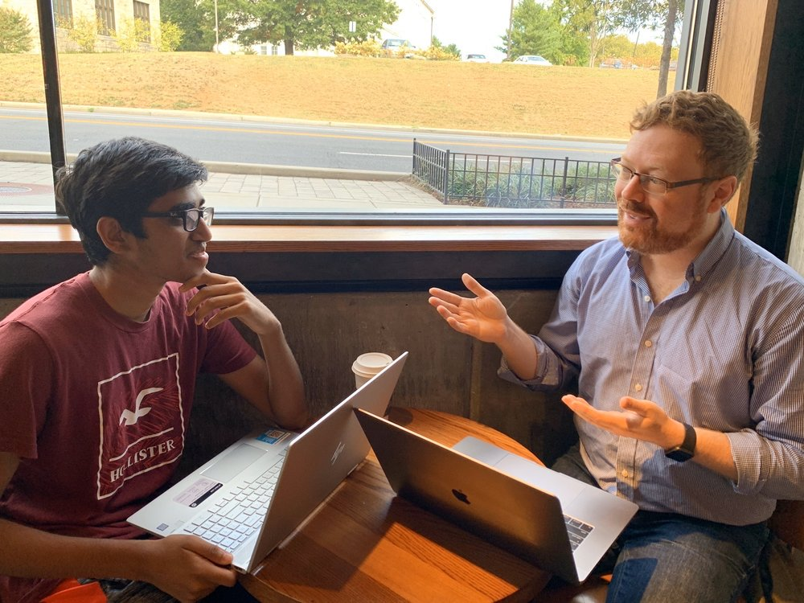

College & Graduate School Essay Consulting — Washington, DC
It's a fair question. Here's the honest answer — and why it matters more than you think.
"Matt is a godsend. From a single meeting he was able to extract a story that best represented me. That simple change resulted in more acceptances than expected and many large scholarships." — David H., Alexandria VA · Yelp ★★★★★
The question everyone's thinking
I've been helping students write college and graduate school essays for over a decade. And I'll be straight with you: AI has changed everything. I've watched my business shrink as students — and their parents — decide to use Claude or ChatGPT instead of hiring someone like me.
I get it. The tools are impressive, fast, free, and polished-sounding. But here's what nobody tells you about using AI to write an admissions essay.
Your essay isn't supposed to sound good in a generic sense. It's supposed to sound like you — at your most vivid, specific, and alive. The entire exercise exists so an admissions officer can hear a voice that belongs to one applicant and no one else. AI cannot do that.
When every applicant has access to a machine that produces decent prose on demand, the students who invest in finding and articulating their genuine voice are the ones who get through.
Three problems AI creates
AI smooths out everything that makes you interesting — the weird turn of phrase, the off-beat observation, the thing you say that nobody else would say. What's left is grammatically perfect and utterly forgettable.
You're not the only applicant using AI. Thousands of students submitting to the same schools are generating essays from the same models, and admissions readers are already noticing. You can't stand out when the tool you're using is designed to blend in.
An admissions essay is not an English assignment. Its only job is to make a stranger remember you after reading hundreds of other applications — and an essay that sounds like everyone else's has failed at that job, no matter how well it reads.
Matthew went over my admissions essays line by line... He is a very patient tutor and makes editing really fun.
The work starts with a conversation, not a blank page. Most students already have the material for a great essay somewhere in their life — they just haven't been asked the right questions yet.
What working together looks like
The essay you need to write is already somewhere inside your experiences and interests. My job is to pull it out, shape it, and make sure it sounds like the best version of you — whether you're a high school senior working on your Common App or a college graduate tackling law school or MBA applications.
We talk — really talk — about your life, your interests, your weird obsessions, the things you care about that you've never thought to write about. This is where the real essay usually lives.
Most applicants pick the obvious topic — the sport, the mission trip, the hardship, the career trajectory. We dig for something more specific and true, because specificity is what makes readers lean in.
You write. I give you line-by-line feedback focused on one thing: does this sound like you, or does it sound like a generic admissions essay? We keep revising until the answer is clearly the former.
We tighten, we cut, we make sure every sentence earns its place. When we're done, you'll have an essay you're actually proud of — one that could only have been written by you.
Not sure if this is right for you? Matt offers a free phone consultation to walk through the process, hear where you are, and answer any questions — no commitment required.
Schedule a Free ConsultationMr. Schwartz played a tremendous part in helping me get accepted to the university of my dreams. His guidance and approach to making college essays better is excellent.
About Matt
My name is Matt Schwartz. By day I'm a journalist at Bloomberg Law, where I've spent years making complex legal stories readable and human. I'm also a Georgetown University Law Center graduate and have won top national prizes for feature writing.
I started helping students with admissions essays because I loved the puzzle of figuring out what makes a person genuinely compelling on paper. Over the past decade-plus, I've worked with high school students applying to Ivies, elite liberal arts colleges, and large state schools, as well as college graduates writing personal statements for law school, MBA programs, and medical school. I've also taught graduate-level storytelling courses at American University, where I worked with students on how to present the most compelling version of themselves — whether in a personal statement, a portfolio, or a pitch.
My legal training taught me how to build an argument, and my journalism career taught me how to find the one detail that makes a story unforgettable — both of which are exactly what a great admissions essay requires.
I've watched AI transform this industry, and I've thought hard about whether what I do still matters. I believe it does — more than ever. When every applicant has access to a machine that produces decent prose on demand, the students who invest in finding and articulating their genuine voice are the ones who get through.

After ten years of doing this, the pattern is consistent: the best essays come from the stories applicants almost didn't think to tell. A good editor's job is to recognize that moment and build from it.
What students & families say
"Matt is a talented and insightful editor and I believe his recommendations helped me secure the largest possible merit award for my graduate school program. In the end, Matt's recommendation turned a good essay into an extraordinary one. In an email from the Director of Admissions, I was informed 'the faculty loved your application and rated you very highly. Your story is a very interesting one.' Matt is an award-winning radio journalist. He knows how to craft a compelling story and will help you do the same."
"Matt is a godsend! From a single meeting Matt was able to extract a story that best represented me. That simple change, and some additional polishing, resulted in more acceptances than expected and many large scholarships. I was even waitlisted to reach schools. I almost don't want to post this review for fear of revealing an untapped resource, but feel not expressing gratitude to be far worse. I highly recommend him."
"Mr. Schwartz played a tremendous part in helping me get accepted to the university of my dreams. His guidance and approach to making college essays better is excellent. I am thankful for his help and strongly recommend his service to those seeking assistance."
"Prior to Schwartz Essay Prep, I decided to go with another essay firm, but when I talked to them I quickly realized that I was paying way too much, and they didn't have a quarter of the credentials Mr. Schwartz had. Mr. Schwartz is a well-known award-winning journalist and an editor for NPR. Mr. Schwartz efficiently improved my essay within only a couple of classes and I decided to work on other supplemental essays too. I highly recommend that you work with Mr. Schwartz to get the best essay prep in a timely manner."
"Matthew went over my admissions essays line by line, making sure he understood my motive and helped me rewrite them in the most articulate and succinct manner. He really took the time to reformulate my sentences to make sure it conveyed my ideas precisely. He is a very patient tutor and makes editing really fun and you will learn a lot from him. I recommend him 100% to anyone who needs any help editing their essays, papers, etc."
"I really appreciated your comments and think I took them to heart in my revisions. Thank you so much for all your help. You were invaluable to me in this process and I greatly appreciate it."
All reviews verified on Yelp · 5.0 average across all reviews · Read them on Yelp →
Common questions
Get started
Matt offers a free consultation — a quick call to hear where you or your student are in the process and answer any questions. Send a message below, email directly, or call or text anytime.
matt@collegeessayman.com · (202) 810-5338 — call or text